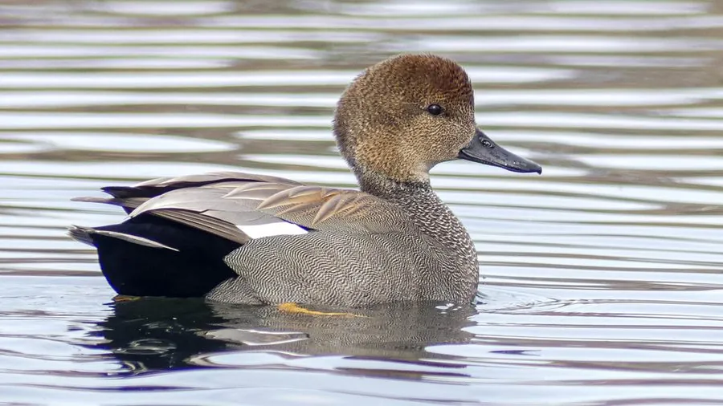

鸟类 · 动物界
赤膀鸭 Anas strepera

欧亚与北美常见的灰色鸭类，雄鸟体侧灰白、尾部黑色，翅上有一块栗红斑，雌鸟褐色带白斑，喜在芦苇浅湖中觅食水草。
- 分类
- 门脊索动物门纲鸟纲目雁形目科鸭科属鸭属
- 栖息环境
- 北半球温带的淡水湖泊、沼泽、芦苇荡与草甸，冬季也到河口和稻田
- 地理分布
- 繁殖于欧亚大陆与北美洲北部，越冬于非洲北部、南亚、中国南方及墨西哥
- 保护级别
- IUCN 无危（LC）
物种志
赤膀鸭体长 46–56 cm，体重 550–1000 g。雄鸟繁殖羽以灰色为主，头部棕褐并缀细斑，胸部暗褐，体侧与背部灰白并带细密波纹，尾下覆羽黑色，翅中覆羽栗红，飞行时特别显眼。雌鸟通体黄褐并布满深色斑纹，喙侧橙色，翼镜黑白相间。
它们繁殖于欧亚大陆和北美洲北部的温带湖泊、沼泽与草甸，冬季南迁至非洲北部、南亚、中国南方及墨西哥等地。赤膀鸭偏爱水生植物丰富的浅水湖泊和芦苇荡，常在水中倒立取食水草，也吃谷物、螺类与水生昆虫。繁殖期在 5–6 月，巢建于水边草丛中，每窝产卵 8–12 枚，雌鸟孵化约 25–27 天。它们迁徙时结成数十至数百只的群体，是湿地中常见的冬候鸟。
形态与习性
- 食性水生植物、谷物、螺类和水生昆虫
- 体长46–56 cm
- 体重550–1000 g
- 繁殖5–6 月，每窝 8–12 枚，孵化约 25–27 天
- 迁徙秋季南迁至非洲北部、南亚及中国南方
- 寿命约 10–15 年
趣味知识
- 雄鸟翅上的栗红色斑块在飞行时才充分显露，赤膀鸭之名由此而来。
- 它们喜欢在水中倒立，把头伸到水底啃食水草，尾羽高高翘起。
- 赤膀鸭的叫声并不响亮，雄鸟发出低沉的咯咯声，常被水声掩盖。